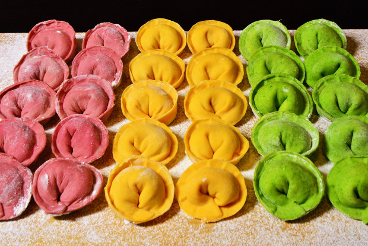

Вареники с мясомДля теста: 2,5 стакана пшеничной муки, 1 яйцо, 0,5 чайной ложки соли, 1\4 стакана воды.
Для начинки: 1 кг мяса, 2 луковицы, 2 столовые ложки сливочного масла, соль, перец. Для поливки: 1 столовая ложка сливочного масла.
Приготовление: 1\10 часть муки заварить 1\3 кипятка от общего количества воды. Заваренную муку перемешать, добавить остаток муки и воды комнатной температуры, соль, яйца и замесить тесто так, чтобы оно было однородным и эластичным. Тесту дать постоять 40 минут.
Мясо, отделенное от костей, нарезать кусочками, обжарить и тушить до готовности с добавлением небольшого количества воды. Тушеное мясо пропустить через мясорубку, добавить мелко нарезанный, отдельно пассированный репчатый лук, соль, перец, пассированную муку, разведенную бульоном, вымешать и тушить.
Из приготовленного теста и начинки сформовать вареники и отварить их в подсоленной воде. При подаче на стол горячие вареники полить растопленным маслом.
Вареники с салом и печеньюДля теста: см. предыдущий рецепт.
Для начинки: 700 г печени, 100 г сала, 2 луковицы, 2 столовые ложки сливочного масла, соль, перец. Для поливки: 1 столовая ложка сливочного масла.
Приготовление: Очищенную от пленок печень промыть, отварить, нарезать небольшими кусочками, пропустить через мясорубку вместе с отваренным свиным салом, заправить поджаренным мелко нарезанным луком, солью, перцем и хорошо перемешать. Из теста и начинки сформовать вареники и отварить в подсоленной воде. При подаче на стол вареники полить разогретым сливочным маслом.
Вареники с ливеромДля теста: 2,5 стакана пшеничной муки, 1 яйцо, 0,5 чайной ложки соли, 1\4 стакана воды.
Для начинки: 1 кг ливера (сердце и легкие), 2 столовые ложки сливочного масла, 2 луковицы, соль, перец. Для поливки: 1 столовая ложка сливочного масла.
Приготовление: 1\10 часть муки заварить 1\3 кипятка от общего количества воды. Заваренную муку перемешать, добавить остаток муки и воды комнатной температуры, соль, яйца и замесить тесто так, чтобы оно было однородным и эластичным. Тесту дать постоять 40 минут.
Сердце (после удаления кровеносных сосудов) и легкие промыть, нарезать небольшими кусочками и тушить до готовности. Ливер пропустить через мясорубку, добавить нарезанный слегка обжаренный репчатый лук, соль, перец, все хорошо перемешать и из начинки и теста сформовать вареники. Вареники отварить в кипящей подсоленной воде до готовности. При подаче на стол полить растопленным сливочным маслом.
Вареники с грибамиДля теста: 2,5 стакана пшеничной муки, 1 яйцо, 0,5 чайной ложки соли, 1\4 стакана воды.
Для начинки: 100 г сушеных белых грибов, 3 луковицы, 2 столовые ложки сливочного масла.
Приготовление: 1\10 часть муки заварить 1\3 кипятка от общего количества воды. Заваренную муку перемешать, добавить остаток муки и воды комнатной температуры, соль, яйца и замесить тесто так, чтобы оно было однородным и эластичным. Тесту дать постоять 40 минут.
Замоченные и сваренные сушеные грибы пропустить через мясорубку, смешать с мелко нарезанным и поджаренным на масле луком. Из теста и начинки сформовать вареники и отварить их в подсоленной воде. При подаче на стол вареники полить разогретым сливочным маслом.
Вареники с фасолью и грибамиДля теста: 2,5 стакана пшеничной муки, 1 яйцо, 0,5 чайной ложки соли, 1\4 стакана воды.
Для начинки: 1,5 стакана фасоли, 2 столовые ложки жира, 50 г сушеных белых грибов, 2 луковицы, соль, перец. Для поливки: 1 столовая ложка сливочного масла.
Приготовление: 1\10 часть муки заварить 1\3 кипятка от общего количества воды. Заваренную муку перемешать, добавить остаток муки и воды комнатной температуры, соль, яйца и замесить тесто так, чтобы оно было однородным и эластичным. Тесту дать постоять 40 минут.
Фасоль замочить, сварить, пропустить через мясорубку, добавить мелко нарезанные вареные грибы, мелко нарезанный репчатый лук, соль, перец, хорошо перемешать и из подготовленного теста и начинки сформовать вареники и отварить в подсоленной воде.
При подаче на стол готовые вареники полить растопленным сливочным маслом.
...С ОВОЩАМИ Вареники с картофелем и грибамиДля теста: 2,5 стакана пшеничной муки, 1 яйцо, 0,5 чайной ложки соли, 1\4 стакана воды.
Для начинки: 1 кг картофеля, 2 луковицы, 2 столовые ложки подсолнечного масла, 50 г сушеных грибов, соль, перец. Для поливки: 1 столовая ложка подсолнечного масла, 1 луковица.
Приготовление: 1\10 часть муки заварить 1\3 кипятка от общего количества воды. Заваренную муку перемешать, добавить остаток муки и воды комнатной температуры, соль, яйца и замесить тесто так, чтобы оно было однородным и эластичным. Тесту дать постоять 40 минут.
Вареный картофель пропустить через мясорубку, смешать со слегка поджаренным мелко нарезанным репчатым луком, рублеными вареными грибами, солью и перцем. Затем из приготовленного теста и начинки сформовать вареники и отварить в подсоленной воде. При подаче на стол вареники полить разогретым подсолнечным маслом, смешанным с поджаренным луком.
Вареники литовскиеДля теста: 200 г муки, 80 г воды, 1 яйцо.
Для начинки: 500 г картофеля, 2 луковицы, 40 г шпига, сливочное масло, 60 г сметаны, 1 яйцо, соль, перец.
Приготовление: Приготовить тесто, как для пельменей, сварить картофель, отсушить и протереть или пропустить через мясорубку. Свиной шпиг нарезать кубиками и жарить вместе с рубленым луком, затем смешать с протертым картофелем, положить сырые яйца, соль и перец.
Тесто раскатать толщиной 1,5-2 мм длинной полоской, на край теста чайной ложкой разложить фарш на расстоянии 2-3 см. Тесто с фаршем завернуть так, чтобы закрыть фарш, затем тесто обжать вокруг фарша и вырезать металлической выемкой. Варить вареники в кипящей подсоленной воде. Перед подачей на стол полить маслом, сметану подавать отдельно.
Готовые вареники можно также положить на металлическую сковороду, залить сметаной, посыпать тертым сыром и запечь в духовке.
Вареники с картофелемДля теста: 2,5 стакана пшеничной муки, 1 яйцо, 0,5 чайной ложки соли, 1\4 стакана воды.
Для начинки: 1 кг картофеля, 2 луковицы, 2 столовые ложки подсолнечного масла, соль, перец. Для поливки: 2 столовые ложки подсолнечного масла, 1 луковица.
Приготовление: 1\10 часть муки заварить 1\3 кипятка от общего количества воды. Заваренную муку перемешать, добавить остаток муки и воды комнатной температуры, соль, яйца и замесить тесто так, чтобы оно было однородным и эластичным. Тесту дать постоять 40 минут.
Картофель очистить, промыть, отварить в подсоленной воде, протереть, добавить мелко нарезанный, слегка поджаренный на подсолнечном масле репчатый лук, соль, перец и все хорошо перемешать. Из подготовленного теста и начинки сформовать вареники и отварить в подсоленной воде.
При подаче на стол вареники полить разогретым подсолнечным маслом и поджаренным на нем луком.
Вареники с капустой и грибами под соусомДля теста: 2 стакана муки, 2 яйца, 8 столовых ложек воды, соль.
Для начинки: 200 г белокочанной капусты, 50 г сушеных грибов, 1 луковица, растительное масло, соль.
Для соуса: 2,5 стакана грибного отвара, 4 чайные ложки муки, 2,5 стакана сметаны, 2 столовые ложки сливочного масла, соль.
Приготовление: Грибы отварить, порубить, отвар процедить. Капусту порубить, обжарить в масле, смешать с поджаренным рубленым луком, солью, грибами. Замесить тесто, тонко его раскатать, вырезать лепешки, в центр которых положить начинку и защипать. Отварить вареники в подсоленной воде и подать с соусом.
Соус: 0,5 стакана грибного отвара смешать с мукой и влить тонкой струйкой, постоянно мешая, в кипящий остальной отвар. Когда соус закипит и загустеет, добавить сметану, масло и перемешать.
Вареники с капустой и яйцамиДля теста: 2 стакана муки, 2 яйца, 8 столовых ложек воды, соль.
Для начинки: 400 г белокочанной капусты, 2 столовые ложки растительного масла, 2 яйца, соль.
Приготовление: Капусту мелко порубить, посолить, стушить в масле под крышкой и перемешать с рублеными крутыми яйцами. Из указанных компонентов замесить тесто, тонко раскатать, вырезать из него лепешки и на середину каждой положить начинку, затем защипать и отварить вареники в кипящей подсоленной воде. Подать, полив маслом.
Вареники с капустойДля теста: 2,5 стакана пшеничной муки, 1 яйцо, 0,5 чайной ложки соли, 1\4 стакана воды.
Для начинки: 1 кг свежей или 900 г квашеной капусты, 2 столовые ложки подсолнечного масла, 1 столовая ложка сахара, 2 луковицы, 1,5 столовой ложки томата-пюре, по 0,5 шт. моркови и петрушки, соль, перец.
Приготовление: 1\10 часть муки заварить 1\3 кипятка от общего количества воды. Заваренную муку перемешать, добавить остаток муки и воды комнатной температуры, соль, яйца и замесить тесто так, чтобы оно было однородным и эластичным. Тесту дать постоять 40 минут.
Очищенную, промытую и мелко нарезанную свежую капусту или отжатую от сока квашеную капусту потушить до готовности с добавлением половины нормы жира, томата-пюре, воды или бульона. Затем добавить нарезанные и поджаренные на подсолнечном масле репчатый лук, морковь, петрушку, сахар, соль, перец, все смешать и поджарить до подсыхания капустной начинки. Из подготовленного теста и начинки сформовать вареники и отварить в подсоленной воде.
...С ТВОРОГОМ Вареники с творогомДля теста: 2,5 стакана пшеничной муки, 1 яйцо, 0,5 чайной ложки соли, 1\4 стакана воды.
Для начинки: 800 г творога 0,5 стакана сахара, 2 яйца, соль. Для поливки: 1 столовая ложка сливочного масла, 0,5 стакана сметаны.
Приготовление: 1\10 часть муки заварить 1\3 кипятка от общего количества воды. Заваренную муку перемешать, добавить остаток муки и воды комнатной температуры, соль, яйца и замесить тесто так, чтобы оно было однородным и эластичным. Тесту дать постоять 40 минут.
Протертый через сито или пропущенный через мясорубку свежий творог смешать с сырыми яйцами, сахаром, солью. Из приготовленного теста и начинки сформовать вареники и отварить их в подсоленной воде. При подаче на стол вареники полить подогретым сливочным маслом и отдельно к ним подать сметану.
Вареники с творогом (2)Для теста: 2 стакана муки, 2 яйца, 8 столовых ложек воды, соль.
Для начинки: 400 г творога, 2 яйца, 0,5 стакана сметаны, сахар, соль.
Приготовление: Творог растереть, смешать с яйцами, сметаной, сахаром, солью. Из указанных в рецепте компонентов замесить тесто, тонко его раскатать, вырезать лепешки, на середину каждой положить начинку, защипать и отварить вареники в кипящей подсоленной воде. Подать со сметаной и горячим маслом.
Вареники ленивыеПродукты: 250 г творога, 1 яйцо, соль, сахар по вкусу, 2-3 столовые ложки муки.
Приготовление: Творог тщательно размешать с яйцом, посолить, посластить, добавить муку и замесить тесто, не липнущее к рукам. Из теста раскатать жгут, нарезать его, кусочкам придать круглую форму. Подготовленные вареники опустить в кипящую подсоленную воду и варить, пока не всплывут, затем вынуть шумовкой, дать воде стечь, положить на тарелку и подавать горячими.
Вареники с творогом, запеченные в сметанеДля теста: 2,5 стакана пшеничной муки, 1 яйцо, 0,5 чайной ложки соли, 1\4 стакана воды.
Для начинки: 600 г творога, 1\3 стакана сахара, 1 яйцо, соль. Для запекания: 200 г творога, 1 яйцо, 0,5 стакана сметаны, 1-2 столовые ложки сахара.
Приготовление: 1\10 часть муки заварить 1\3 кипятка от общего количества воды. Заваренную муку перемешать, добавить остаток муки и воды комнатной температуры, соль, яйца и замесить тесто так, чтобы оно было однородным и эластичным. Тесту дать постоять 40 минут.
Протертый через сито или пропущенный через мясорубку свежий творог смешать с сырыми яйцами, сахаром, солью. Из приготовленного теста и начинки сформовать вареники и отварить их в подсоленной воде. Готовые вареники перемешать с творогом, переложить в форму для запекания, полить сливочным маслом, сырыми яйцами, смешанными со сметаной и сахаром, и запечь в духовке.
Вареники гречневые с творогомДля теста: 2 стакана гречневой муки, 0,5 стакана молока или воды, 1 яйцо, соль.
Для начинки: 600 г творога, 1\3 стакана сахара, 1 яйцо, соль. Для поливки: 0,5 стакана сметаны, 1 столовая ложка сливочного масла.
Приготовление: Свежий протертый через сито творог хорошо перемешать с сахаром, сырыми яйцами и солью. В гречневую, муку положить соль, яйца, перемешать и заварить кипящим молоком или водой. Тесто брать небольшими кусочками, на ладони сформовать круглые тонкие лепешки, на середину каждой лепешки выложить подготовленный творог и придать вареникам полукруглую форму.
Подготовленные вареники положить в кастрюлю с кипящей подсоленной водой и варить при умеренном кипении. При подаче на стол вареники полить разогретым сливочным маслом и подавать со сметаной.
...С ЯГОДАМИ И ФРУКТАМИ Вареники с клубникой или малинойДля теста: 2,5 стакана пшеничной муки, 1 яйцо, 0,5 чайной ложки соли, 1\4 стакана воды.
Для начинки: 4 стакана клубники или малины, 0,5 стакана сахара.
Приготовление: 1\10 часть муки заварить 1\3 кипятка от общего количества воды. Заваренную муку перемешать, добавить остаток муки и воды комнатной температуры, соль, яйца и замесить, тесто так, чтобы оно было однородным и эластичным. Тесту дать постоять 40 минут.
Перебранную и промытую ягоду пересыпать сахаром и поставить в холодное место на 30 минут, после чего отцедить сок, из приготовленного теста и начинки сформовать вареники и отварить их. Готовые вареники подавать на стол вместе с отцеженным соком.
Вареники с черникойДля теста: 1,5 стакана муки, 1-2 яйца, 0,5 стакана воды, соль.
Для начинки: 600 г черники, 1 стакан сахара.
Приготовление: Чернику смешать с сахаром. Приготовить крутое тесто, тонко его раскатать, вырезать лепешки, положить на них по чайной ложке начинки, защипать, отварить в кипящей воде и подать с сахаром и сметаной.
Вареники с вишнямиДля теста: 2,5 стакана пшеничной муки, 1 яйцо, 0,5 чайной ложки соли, 1\4 стакана воды.
Для начинки: 4 стакана вишен, 0,5 стакана сахара. Для поливки: 0,5 стакана сметаны.
Приготовление: 1\10 часть муки заварить 1\3 кипятка от общего количества воды. Заваренную муку перемешать, добавить остаток муки и воды комнатной температуры, соль, яйца и замесить тесто так, чтобы оно было однородным и эластичным. Тесту дать постоять 40 минут.
Из перебранных и промытых вишен удалить косточки. Мякоть положить в кастрюлю, пересыпать сахаром, дать постоять полчаса и отцедить сок. Из теста и начинки приготовить вареники и отварить их. Готовые вареники подавать на стол, полив сметаной.
Вареники со сливамиДля теста: 2,5 стакана пшеничной муки, 1 яйцо, 0,5 чайной ложки соли, 1\4 стакана воды.
Для начинки: 700 г свежих слив, 0,5 стакана сахара.
Приготовление: 1\10 часть муки заварить 1\3 кипятка от общего количества воды. Заваренную муку перемешать, добавить остаток муки и воды комнатной температуры, соль, яйца и замесить тесто так, чтобы оно было однородным и эластичным. Тесту дать постоять 40 минут.
Сливы перебрать, промыть, удалить косточки, мелко нарезать, положить в посуду, засыпать сахаром, дать постоять 30 минут и отцедить сок. Из теста и ягод приготовить вареники и отварить до готовности. При подаче на стол вареники полить отцеженным сливовым соком.
Вареники с сушеными сливамиДля теста: 2,5 стакана пшеничной муки, 1 яйцо, 0,5 чайной ложки соли, 1\4 стакана воды.
Для начинки: 300 г сушеных слив, 0,5 стакана сахара. Для поливки: 3\4 стакана сметаны.
Приготовление: 1\10 часть муки заварить 1\3 кипятка от общего количества воды. Заваренную муку перемешать, добавить остаток муки и воды комнатной температуры, соль, яйца и замесить тесто так, чтобы оно было однородным и эластичным. Тесту дать постоять 40 минут.
Промытые сушеные сливы залить несколько раз кипятком для их размягчения, удалить косточки, мелко нарезать и посыпать сахаром. Из подготовленного теста и начинки сформовать вареники.
Вареники можно готовить и с целыми сливами, для чего после удаления косточки каждую сливу посыпать сахаром, положить на квадратик теста и сформовать вареники треугольной формы. Сваренные вареники посыпать сахаром и подавать на стол со сметаной.
Вареники с яблокамиДля теста: 2,5 стакана пшеничной муки, 2 яйца, 0,5 чайной ложки соли, 1\4 стакана воды.
Для начинки: 800 г свежих яблок, 0,5 стакана сахара. Для поливки: 1\4 стакана меда.
Приготовление: 1\10 часть муки заварить 1\3 кипятка от общего количества воды. Заваренную муку перемешать, добавить остаток муки и воды комнатной температуры, соль, яйца и замесить тесто так, чтобы оно было однородным и эластичным. Тесту дать постоять 40 минут.
Яблоки очистить от кожицы, удалить сердцевину с семенами, нарезать соломкой, пересыпать сахаром. Из не очень тонкого теста и начинки приготовить вареники и отварить до готовности. При подаче на стол вареники полить медом.
Вареники с макомДля теста: 2,5 стакана пшеничной муки, 2 яйца, 0,5 чайной ложки соли, 1\4 стакана воды.
Для начинки: 1,5 стакана мака, 0,5 стакана сахара. Для поливки: 1\4 стакана меда или 2-3 столовые ложки сахара для посыпки.
Приготовление: 1\10 часть муки заварить 1\3 кипятка от общего количества воды. Заваренную муку перемешать, добавить остаток муки и воды комнатной температуры, соль, яйца и замесить тесто так, чтобы оно было однородным и эластичным. Тесту дать постоять 40 минут.
Мак залить кипятком, удалить всплывший наверх мусор, слить воду, вторично залить кипятком, оставить так на 10-15 минут, все время подогревая воду, но не доводя до кипения. Затем мак выложить на сито и, когда вода стечет, растереть, смешать с сахаром и продолжать растирать еще 4-5 минут.
На подготовленное тесто разложить растертый мак, сформовать вареники и немедленно положить их в кипящую подсоленную воду, иначе тесто быстро размокнет от находящейся в маке воды. При подаче на стол вареники полить медом или посыпать сахаром.